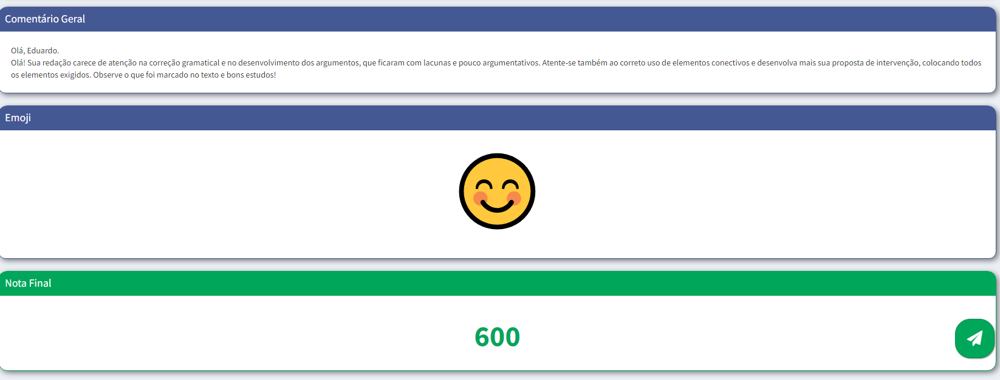
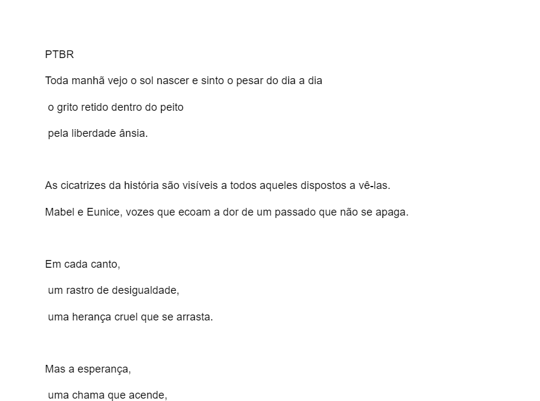

Atividades de Linguagens
 Apresentações Pré-Modernismo
Apresentações Pré-Modernismo
Fiz uma apresentação sobre a obra Cidades Mortas de Monteiro Lobato em uma aula sobre pré modernismo.
Habilidades: H3, H4, H22 e H24
Atividade Simple past
Fiz uma atividade em grupo, em que produzi um cartaz que simula um post em uma rede social utilizando o simple past.
Habilidades: H11, H25, H10, H24
 Simulado redação
Fizemos um simulado Redação ENEM para aprimorar as habilidades de escrita e expressão.
 Maquete livro Solitária
Maquete livro Solitária Em grupo contrui uma maquete que represente o cenário e os principais elementos do livro "Solitária" de Eliana Cruz, com o propósito de refletir sobre os temas e personagens apresentados no livro
Habilidades:h11, h15, h25
 Poema
Confeccionei um poema inspirados no livro "Solitária" de Eliana Cruz em português e inglês para tentar Capturar a Essência da Obra.
Habilidades:h11, h15, h25
 Simulado redação
Simulado redação
Fizemos um simulado Redação ENEM para aprimorar as habilidades de escrita e expressão.
 Revista Literária
Revista Literária
Atualizei os conteúdos da revista literária incluindo as outras atividades sobre o modernismo e tropicalismo realizadas nesse trimestre
Habilidades: C1, H3, H4, H5.
Fizemos uma apresentação sobre o autor Jorge de Melo abordadndo o contexto do modernismo no Brasil
Habilidades: Não especificadas pelo docente.